最大4人でボス討伐に挑む、武器ごとの役割とNPC共闘を活かした2D視点アクションゲーム
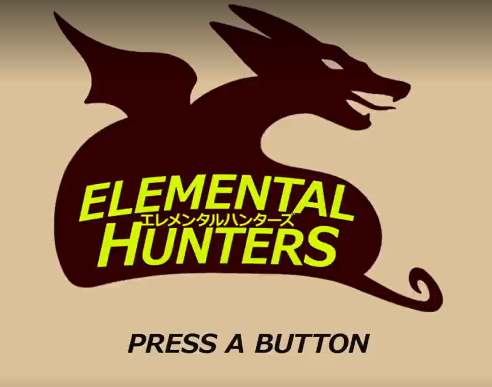
| 項目 | 内容 |
|---|---|
| 氏名 | 山口 隼（ヤマグチ ハヤト） |
| 所属 | 河原電子ビジネス専門学校 ゲームクリエイター科 27卒 |
| 希望職種 | ゲームプログラマ |
| 使用言語 | C++14 |
| 使用技術 | DirectX |
| 開発環境 | Visual Studio 2022 / 学内エンジン |
| メール | CA01244029@st.kawahara.ac.jp |
C++を用いたアクションゲーム制作で、プレイヤー操作、攻撃処理、NPC制御など、 ゲームの遊びを支える実装を中心に担当しています。
本作品で担当した箇所は以下の通りです。
| 担当箇所 | 内容 |
|---|---|
| プレイヤー操作 | 4種類のキャラクターの基本動作と攻撃アクション部分 |
| 攻撃処理 | 階層型StatePatternを用いたコンボや攻撃遷移処理 |
| NPCの行動ロジック | プレイアブルキャラができる全行動をロジック化 |
| 入力処理 | PlayerとNPCの入力処理を共通処理とするAdapterPattern |
| 攻撃オブジェクトの生成管理 | FactoryPatternを用いた生成管理 |
| 見てほしい内容 | 理由 |
|---|---|
| PV | ゲーム全体の流れ、キャラクター、ボス戦の雰囲気が短時間で分かるため |
| キャラクター紹介 | 剣・ハンマー・杖・銃の役割やアクション差が分かるため |
| 操作方法・攻撃方法 | 同じ攻撃ボタンでも入力状態によって攻撃が変化する本作の特徴が分かるため |
| 入力Adapter / NPC制御 | PlayerとNPCで同じアクション処理を使えるようにした設計意図が分かるため |
| BulletFireRequest / Factory | 攻撃Stateと弾生成処理を分離した工夫が分かるため |
| 項目 | 内容 |
|---|---|
| 作品名 | ELEMENTAL HUNTERS |
| ジャンル | 3Dモデルを用いた2D視点アクションゲーム |
| 制作形式 | チーム制作 |
| 制作人数 | 3人 |
| プレイ人数 | 1〜4人 |
| 使用言語 | C++14 |
| 使用技術 | DirectX |
| 開発環境 | Visual Studio 2022 / 学内エンジン |
| バージョン管理 | GitHub / Forkクライアント |
| 連絡手段 | Teams |
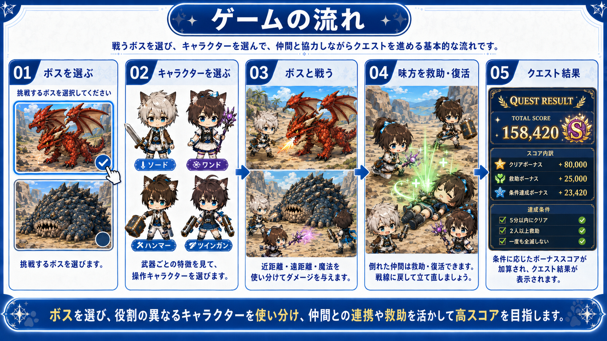
ELEMENTAL HUNTERSは、最大4人でボス討伐に挑む2D視点アクションゲームです。
プレイヤーは、剣・ハンマー・杖・銃など性能の異なるキャラクターを操作し、 制限時間内にボスの撃破を目指します。
ソロプレイ時はNPCと共闘できるため、1人でも複数キャラクターで戦っているような体験を目指しました。
| 要素 | 内容 |
|---|---|
| 目的 | 制限時間内にボスを討伐する |
| 遊び方 | 武器ごとの攻撃アクションを使い分けて戦う |
| 特徴 | NPCと共闘しながらボスに挑む |
| プレイ感 | スピーディーなボス討伐アクション |
本作品の面白さは、武器ごとに異なる攻撃アクションを使い分けながら、ボスを攻略することです。
同じBボタンでも攻撃内容が変化します。
そのため、プレイヤーはキャラクターの特徴や状況に応じて、多種多様な攻撃を使い分けながら戦えます。
また、NPCと共闘することで、ソロプレイでもパーティで戦っている感覚を出しています。
| 項目 | URL |
|---|---|
| YouTube | こちらからアクセスできます |
ゲームの流れ、プレイアブルキャラクターの紹介、ボス戦、戦闘の雰囲気を1分程度で確認できる紹介動画です。
ゲームの流れや基本的な遊び方をまとめたスライドです。
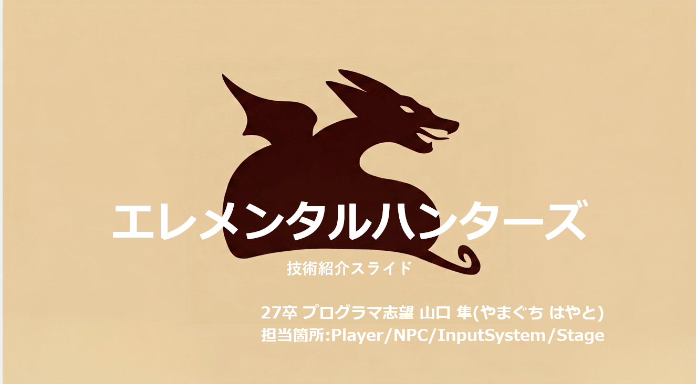
実装面で工夫した設計や処理の分離についてまとめたスライドです。
| 担当 | 人数 | 内容 |
|---|---|---|
| アウトゲーム全般 | 1人 | UI / 演出 / ゲームフロー全体の管理 |
| インゲーム | 2人 | Bossキャラクター / NPC / Player / ステージ制御 |
計3人で制作しました。
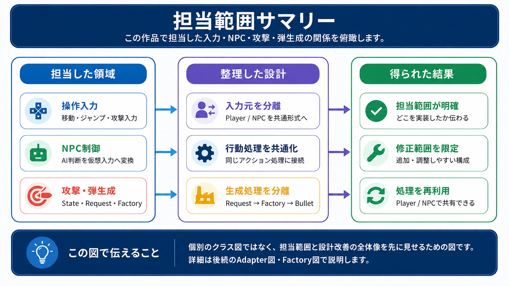
上図は、担当した操作入力、NPC制御、攻撃処理、弾生成処理の関係をまとめたものです。
個別の技術説明に入る前に、チーム制作の中で自分が担当した範囲を把握しやすいようにしています。
| 担当領域 | 内容 |
|---|---|
| プレイヤー・キャラクター制御 | 4種類のキャラクターの基本動作と攻撃処理 |
| アクション・状態管理 | Idle / Run / Jump / Attack / Hit / Death などの状態管理 |
| NPC制御 | 味方NPCの接近、攻撃、味方救出行動 |
| 入力処理 | GamePadInputAdapter / VirtualInputAdapter による入力処理の分離 |
| 弾・魔法生成 | BulletFireRequest / BulletFactory による弾・魔法生成処理 |
| 演出管理 | BGM / SE / Effect / ダメージ数表示 / 復活演出 |
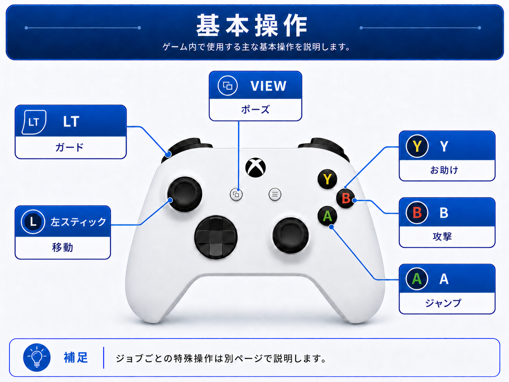
移動、ジャンプ、攻撃などの基本動作をまとめています。
本作品では、同じBボタンでも入力状態によって異なる攻撃アクションへ派生します。
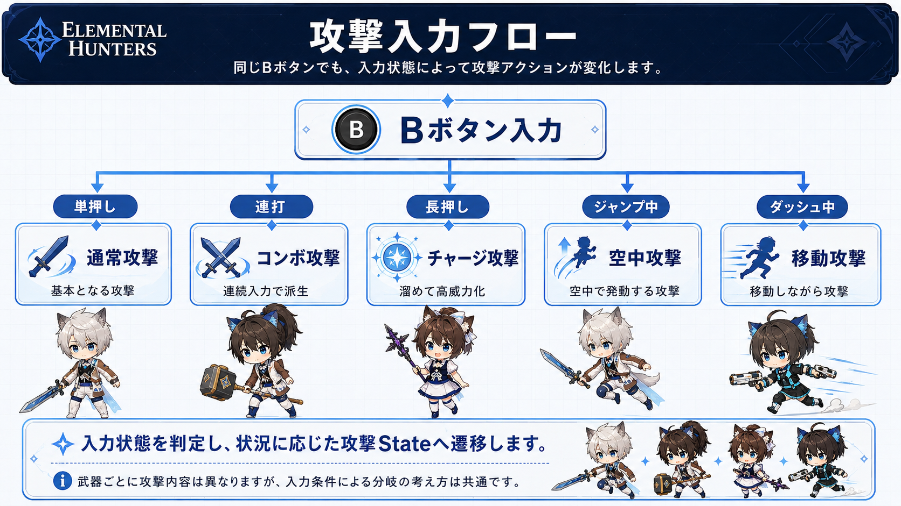
基本的な攻撃の流れです。

同じBボタンでも条件やタイミングによって様々な攻撃に派生することが可能です。
※Combo 1〜3は固有の技名ではなく、武器種や状態に応じて派生する共通コンボアクションとして表記しています。
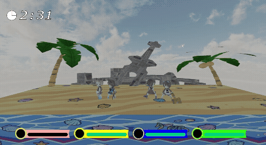
他キャラクターのHPが0になった際、近くでYボタンを押すことで数秒間かけて復活させることができます。
復活中は無防備になるため、復活させるタイミングが重要になります。
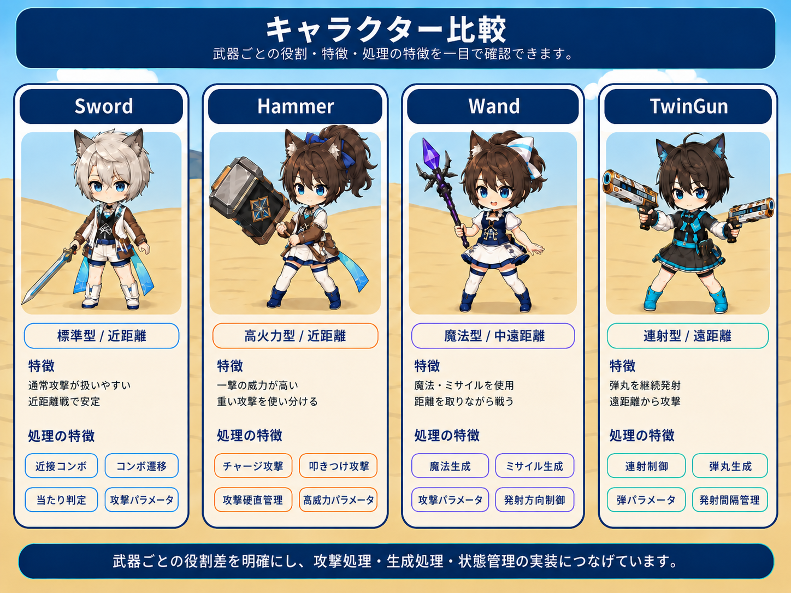
4種類のプレイアブルキャラクターについて、武器ごとの役割や攻撃スタイルの違いをまとめています。
本作品では、デザインパターンを実装するだけでなく、修正や追加を行いやすくすることを重視しました。
| 技術項目 | 理由 |
|---|---|
| キャラクター共通基盤 | キャラクターごとの重複処理を整理し、武器ごとの差分を分離したため |
| 階層型State + コンボテーブル | アクション追加や攻撃調整をしやすい構成にしたため |
| 入力Adapter / NPC制御 | 物理入力と仮想入力を共通化し、PlayerとNPCの挙動差を抑えたため |
| BulletFireRequest / Factory | 攻撃Stateから弾生成処理を分離し、修正箇所を限定したため |
| データ駆動ステージ読み込み | ステージ追加時のコピーコードを減らすため |
| TSVによるパラメータ外部化 | 大量のパラメータ調整をコンパイル不要にし、可読性を高めるため |
| オブジェクトプール | 生成と再利用を分離し、戦闘中の処理負荷を抑えるため |
| 非同期ロード / Loading | シーン遷移時のフリーズと待ち時間の体感を改善するため |
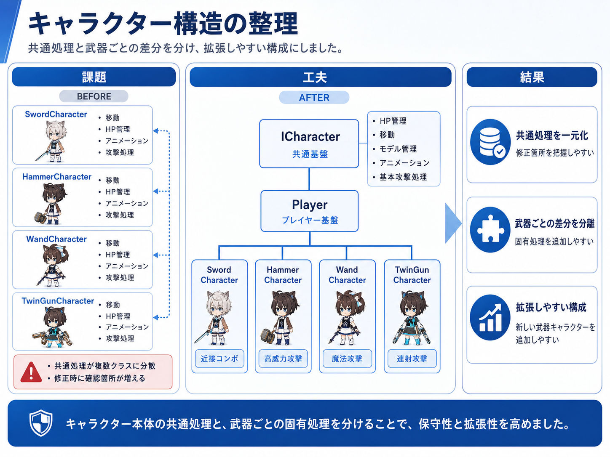
当初はキャラクターごとに移動、HP管理、アニメーション、攻撃処理を個別に実装していたため、同じような処理が複数のクラスに分散していました。
その結果、共通処理を修正する際に複数クラスを確認する必要があり、修正箇所の視認性が悪い状態でした。
キャラクターの基底として ICharacter を用意し、HP、攻撃ステータス、モデル管理など、実体を持つキャラクターに共通する処理をまとめました。
さらに、プレイヤーとして操作可能なキャラクターは Player を中心にし、武器ごとの差分は IWeaponCharacter から派生する SwordCharacter、HammerCharacter、WandCharacter、TwinGunCharacter に分けました。
キャラクター本体の共通処理と、武器ごとの固有処理を分けられました。 これにより、武器キャラクターを追加する際に既存のPlayer処理を大きく変更せずに拡張できる構成になりました。
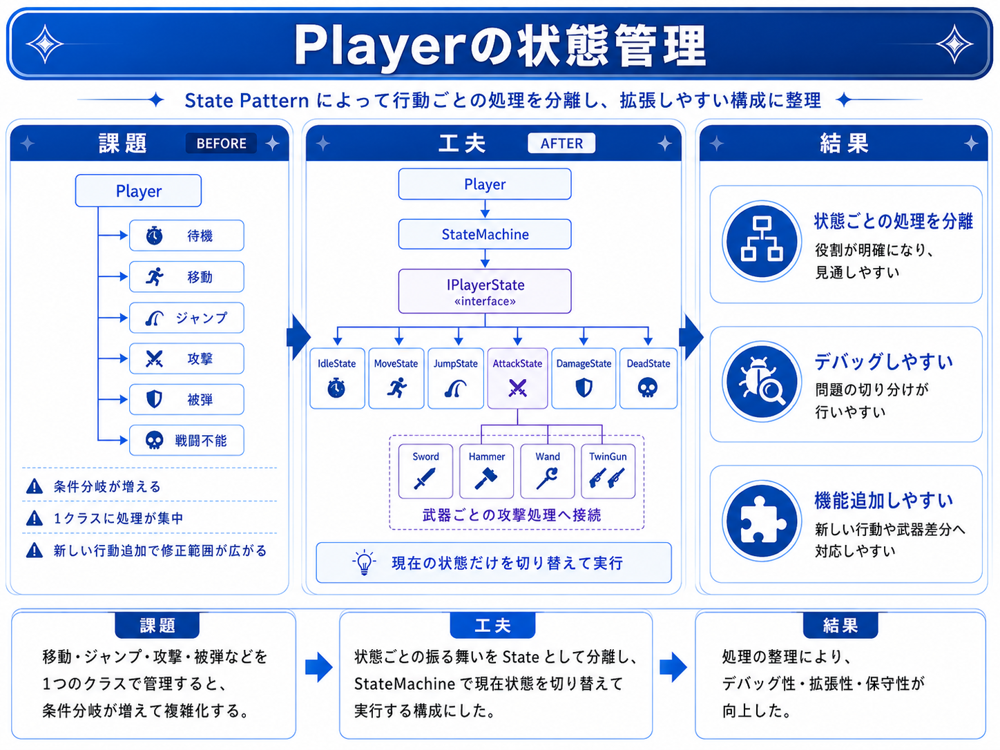
攻撃アクションを作る際、コンボの派生条件や技ごとのダメージ設定を全てコード内にif文で書くと、 技が増えるたびに条件分岐が増えてしまい、攻撃の追加や数値調整がしづらくなる問題がありました。
攻撃の土台となる PlayerAttackBaseState を作り、各攻撃技がそれを継承する階層型Stateとして実装しました。
また、コンボの派生条件は ComboRouteTable、攻撃ごとのダメージ倍率やクリティカル補正は AttackParameterTable に分離しました。
ステート側では、現在の状態IDと入力条件をもとにテーブルを検索し、次の状態や攻撃パラメータを取得する形にしています。
攻撃ステート側の処理を増やしすぎず、ルートやダメージ倍率の調整をテーブル側で行えるようになりました。 これにより、アクションの調整作業とロジックの実装を分離でき、保守性と調整効率を高めることができました。
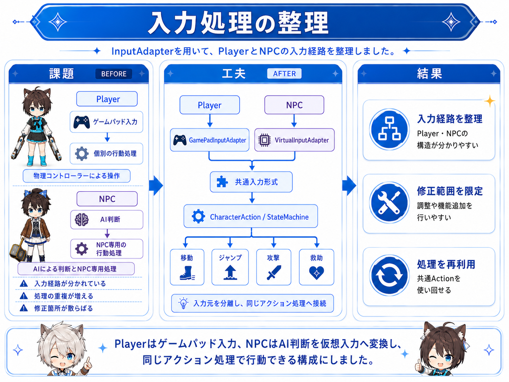
旧設計では、PlayerInput クラス内で物理コントローラー入力とNPC用の仮想入力を分岐して処理していました。
そのため、PlayerInput が「入力元の判定」と「ゲームアクションへの変換」の両方を担当しており、
操作キャラクター切り替えやNPC制御を拡張しづらい構造になっていました。
Adapterパターンを導入し、物理コントローラー用の GamePadInputAdapter と、NPC用の VirtualInputAdapter に分離しました。
PlayerInput は入力元を直接判定せず、親クラス経由で取得した入力を IsJump、IsAttack、IsChargeAttack などのゲームアクションへ変換する役割に限定しました。
また、PlayerControllerHub を用意し、操作中のキャラクターには GamePadInputAdapter、
非操作キャラクターには VirtualInputAdapter を割り当てることで、キャラクターを再生成せずに
操作対象を切り替えられる構成にしました。
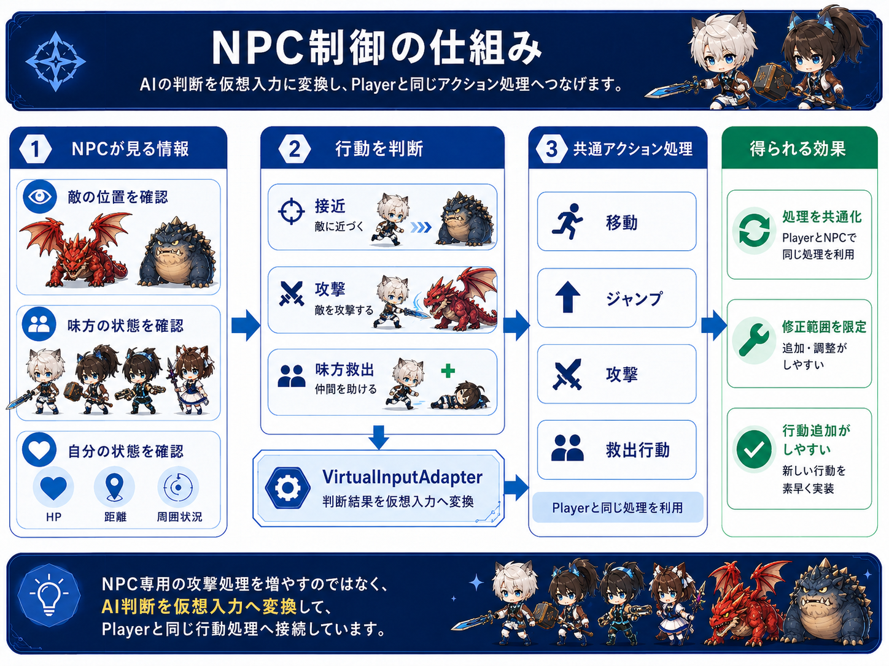
PlayerInput から入力元判定のif分岐を削除でき、物理入力とNPC入力を同じ経路で扱えるようになりました。
NPCはAIが仮想入力を送ることでPlayerと同じアクション処理を利用できるため、プレイヤー操作キャラクターとNPCキャラクターの挙動差を抑えられました。
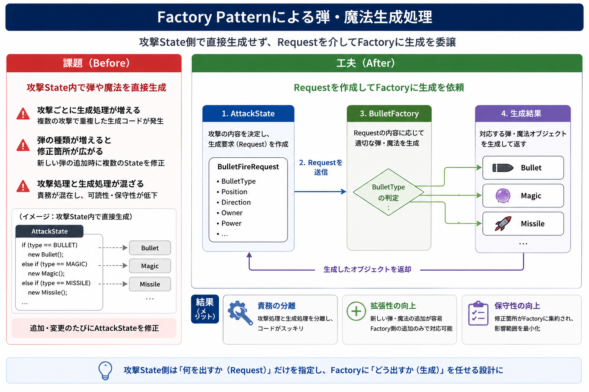
銃キャラクターの攻撃を実装する際、各攻撃Stateが弾丸の生成、モデル情報などを直接持ってしまうと、 ステートクラスが肥大化してしまう問題がありました。
攻撃ステートからは BulletFireRequest として、弾の種類、生成基準位置、発射方向だけを GunShooter へ渡す形にしました。
GunShooter は BulletFactory に弾丸生成を依頼し、BulletFactory 側で
BulletType に応じた弾丸クラスを生成します。
また、弾丸ごとの速度、寿命、生成位置補正は BulletParameterTable に分離し、
モデル情報は BulletModelRegister から取得するようにしました。
発射時のエフェクトなどは IBulletFireListener へ通知することで、弾丸生成処理と演出処理を分けています。
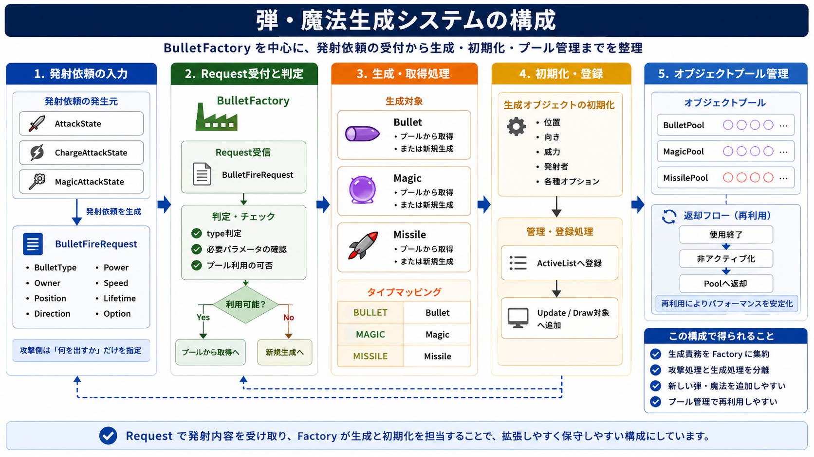
攻撃ステートは発射タイミングと発射する弾丸の種類のみを扱う形になりました。 その結果、弾の種類追加や速度調整を行う際の修正箇所を限定しやすくなりました。
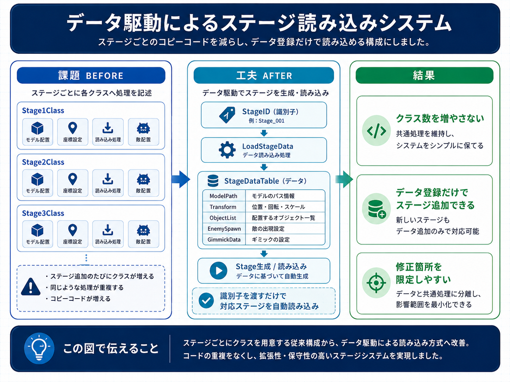
既存の設計ではステージごとにクラスを作成していたため、ステージが増えるたびに同じような処理が増え、 コピーコードが量産されていました。
ステージの情報を描画、座標、モデルパスなどの構成データに分離しました。
ステージごとの固有データは構造体にまとめ、LoadStageData クラスが識別子を受け取るだけで、
そのステージを自動で読み込めるように設計しました。
ステージが増えてもクラス数は増えず、ステージデータの登録のみで運用できる形になりました。 これにより、ステージ追加時のコピーコードを減らし、開発効率を高めることができました。
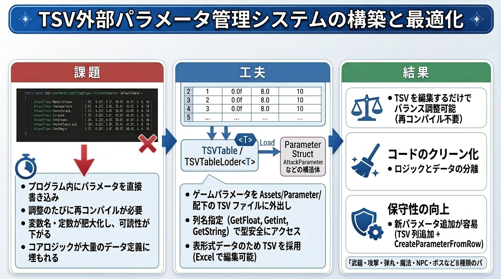
当初は std::unordered_map を用いてテーブル管理を行っていました。
しかし、開発が進むうちに調整項目や引数が増えテーブルとしての視認性が悪くなってしまう問題が発生してしまいました。そこで、この問題を解決するべくTSVファイルによるパラメーターの外部化を図りました。これによりTSVデータの数値を変更するだけでゲームへ反映することができ、誰でも簡単に調整が可能となっています。
ステータス管理としてJSONを用いられる例は多いと思います。ですが、今回の担当範囲は武器種や弾丸などの数値一覧という、いわゆる表データです。1行1列ごとに調整項目が並ぶ表データである以上、TSVファイルが最適だと判断しました。また、TSVファイルはExcelデータをそのまま編集できるためプログラムに慣れていない方でも編集が容易なのは大きなメリットだと感じています。JSONの場合、括弧やカンマの記載ミスなどにより表形式のデータを手作業で直す用途には向きにくいと考えました。以上の理由から、汎用性の高い JSON ではなく、今回のデータ構造と編集フローに合った TSV を採用しました。
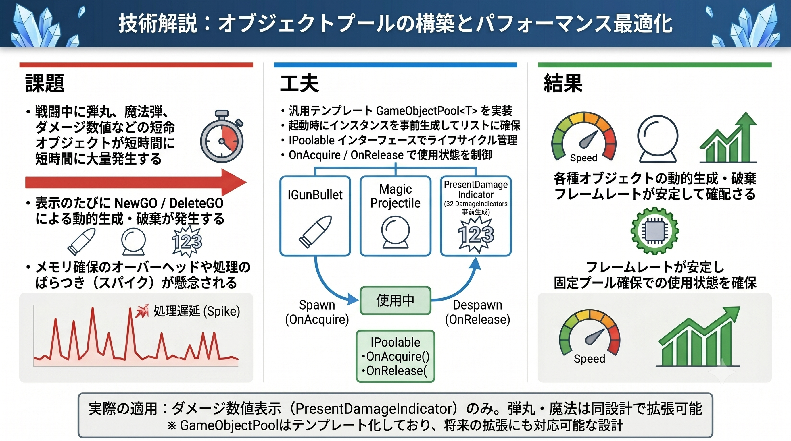
起動時にテンプレートから必要数を把握し、事前に生成しています。
また、表示のタイミングを Active()、OnRelease() で切り替え、
プールが空の状態になった場合のみ、Factory クラスから追加生成を依頼しています。
攻撃Stateは発射タイミング、BulletFireRequest / BulletFactory は生成ロジック、Template<> は取得・返却を担当します。
生成と再利用を分離することで、セクション4のFactory設計と役割が重ならない構成にしています。
まず PresentDamageIndicator から適用し、弾丸・魔法も同じ流れで載せられるようにしています。
Factoryパターンのみでは都度の生成・破棄が続き、生成と破棄に負荷がかかってしまいます。 Poolのみでは種類ごとの生成ロジックがプール側に偏り、責務が分かりにくくなります。 両者を組み合わせることで、生成ルールと寿命管理を分けられ、プール化したい対象が増えても同じ手法で対応できます。
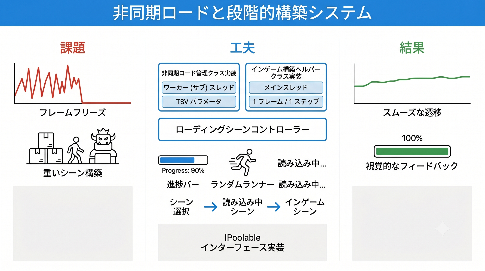
読み込み中は進捗バーに加え、武器種ごとのランナー演出を表示します。
以下は Gif フォルダ内の4種類の差分GIFです。
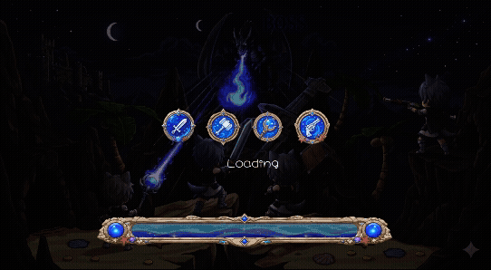
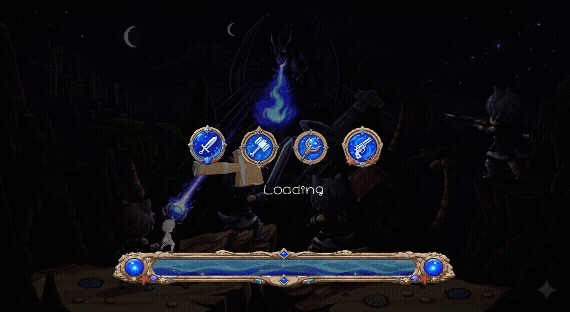
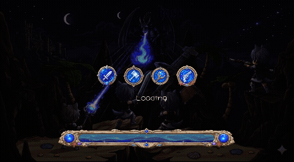
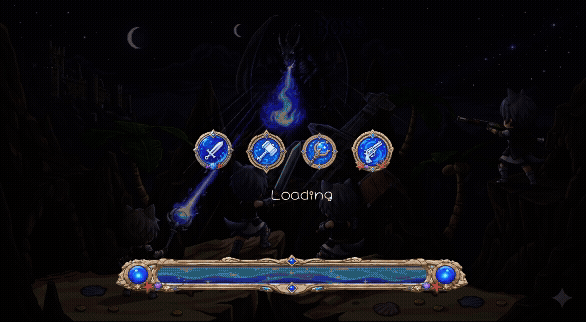
LoadStageData でステージ構成を定義し、TSVでパラメータを外部化しています。
非同期ロード管理がファイル読み込み・パース、段階構築ヘルパーがメインスレッド上でのオブジェクト生成、ローディングシーンが遷移制御と演出を担当します。
「何を載せるか」「読む」「載せる」「見せる」を分け、セクション5・6のデータ駆動設計の延長として構築しています。
ファイルI/Oはサブスレッド向きですが、描画やゲームオブジェクトの生成はメインスレッド側の処理が多いため、処理をすべて非同期にせず「読む／載せる」で分担しています。 4武器のランナー演出で、待ち時間中も処理が進んでいることを視覚的に伝えています。
現状は読み込みと構築の分担までですが、生成・読み込み対象をさらにスレッドで仕分けし、ロード時間の短縮を進めます。
| 項目 | 内容 |
|---|---|
| 起動方法 | Game.exe を起動してください |
| 推奨環境 | Windows 11 |
| 推奨操作 | Xbox系コントローラー (DirectInputSystemが採用されているため) |
| キーボード操作 | 対応 |
| 確認してほしい内容 | PV / キャラクター紹介 / 攻撃方法 / 入力Adapter / BulletFireRequest / Loading |
| 既知の不具合 | 提出時点で把握している進行不能の既知不具合はありません |
リファクタリング
ステージ追加
ロード処理の最適化
ガードシステムの実装
| 種類 | URL |
|---|---|
| YouTube | こちらからアクセスできます |
| Googleドライブ | こちらからアクセスできます |
| GitHub | こちらからアクセスできます |
| 過去作品（個人制作） | こちらからアクセスできます |
| 過去作品(ポートフォリオ) | こちらからアクセスできます |